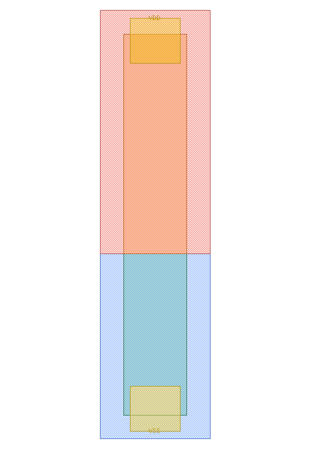
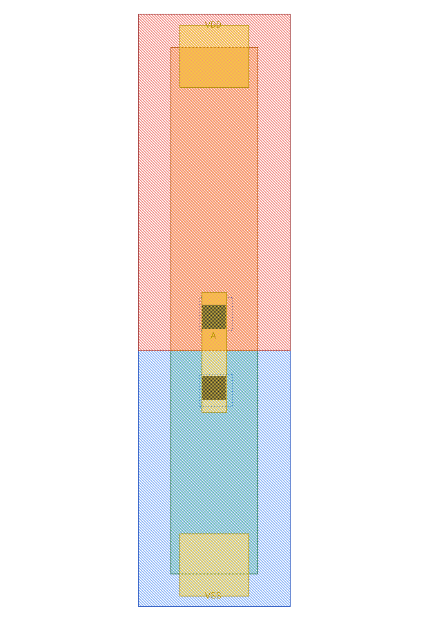

第 19 章 常量、填充、体接触与天线单元
不改变 RTL 功能，不代表可以从物理库中省略
19.1 常量、填充、天线与 tap：没有真值表也是一种答案
这一组应分成两类：LOGIC0/1 产生真实逻辑常量；FILL、ANTENNA、TAP 主要满足制造、可靠性或物理连续性要求。它们可能不在 RTL 功能路径上，却会决定版图能否通过 DRC/LVS/天线/闩锁相关检查。
| 单元 | 输入/条件 | 输出/逻辑真值 | 物理作用 |
|---|---|---|---|
| LOGIC0_X1 | 无逻辑输入 | Z=0 | 提供常 0，避免用普通信号硬接 VSS |
| LOGIC1_X1 | 无逻辑输入 | Z=1 | 提供常 1，避免用普通信号硬接 VDD |
| FILLCELL_X1/X2/X4/X8/X16/X32 | 无逻辑输入/输出 | N/A | 填补 row 空隙并保持井、注入、电源轨等连续；不同 X 表示宽度 |
| ANTENNA_X1 | 端口 A | N/A | 用于天线修复/保护连接；本 CDL 子电路为空，不能仅由它证明具体二极管模型 |
| TAPCELL_X1 | VDD/VSS | N/A | 名称意图是井/衬底 tap；但本包只有空 CDL，无对应逐单元 GDS/LEF，无法完成物理验证 |
它们在流程中什么时候出现
| 单元类别 | 为什么需要 | 常见插入者/阶段 | 具体例子 | 误用后果 |
|---|---|---|---|---|
| LOGIC0/LOGIC1（tie cell） | 通过专用结构提供稳定常量，避免普通 MOS 栅按不受支持的方式直接连电源轨 | 综合或物理实现工具；也常用于 ECO | 未使用的功能使能固定为 0；测试模式固定为 0 | 直接接 VDD/VSS 可能违反库/可靠性/天线方法学；一个 tie 输出的允许扇出也有限 |
| FILLCELL | 填满标准单元行的剩余宽度，维持井、注入、边界和电源轨连续 | 布局完成后的物理实现步骤，具体次序随流程 | 用 X8+X2+X1 组合填一个 11 个 site 的空隙 | 仅留白可能造成层不连续或违反密度/边界规则；不能拿 filler 当逻辑缓冲器 |
| ANTENNA | 为制造过程中积累在长金属上的电荷提供受控泄放/保护路径 | 布线后的天线检查与修复 | 某栅网络金属比过大时，插保护单元或改变布线层 | “图上放了一个二极管形状”不等于 deck 已识别；必须重跑天线检查和 LVS |
| TAPCELL | 把 N-well/P-substrate（或相应 body 网络）以规定间距连接到电源/地，控制体电位并降低闩锁风险 | 行规划/布局早期按 PDK 规则周期插入 | 每隔规定距离插 tap，并在宏边界、井边界按规则处理 | 缺少 tap 可能导致体端浮动、ERC/DRC 失败和可靠性风险 |
一个小型物理实现例子
- 网表中的
test_en=1'b0由 tie-low 单元提供，而不是把多个普通输入任意短到 VSS。 - 布局阶段按目标 PDK 的最大 tap 间距和边界规则插 tap；不能从 FreePDK45 的名称照抄间距到新工艺。
- 标准单元位置稳定后，用不同宽度 FILLCELL 填补行内空隙，同时保留合法电源轨和井连续关系。
- 完成信号布线后运行天线检查；违规网可通过跳层、调整布线或插入工艺认可的 antenna cell 修复。
- 每次插入或修改后重跑相应 DRC/LVS/天线/ERC，而不是只检查 GDS 截图是否“看起来完整”。
{kind=link}

{kind=link}

TAPCELL_X1。如果设计流程会插 tap，这不是文档小瑕疵，而是必须补齐或明确替代策略的库视图缺失。19.2 “无逻辑功能”不等于“没有验收标准”
先分清三个容易被名字误导的物理问题
体接触：MOS 的 B 端不是画电路图时可有可无的第四根线。源极扩散接 VSS 不代表 P 型体区已获得良好 VSS 连接；要使用工艺指定的体接触结构。体区/井存在分布电阻，只有很远一个 tap 时，局部电位可能受注入电流扰动，所以规则会限制 tap 距离/覆盖，而不只是“整片有一个就行”。普通 filler 不能在没有相应结构和规则依据时冒充 tap。
闩锁（latch-up）：这是 bulk CMOS 中寄生器件可能形成持续强导通通路的可靠性问题，不是上一章用来保存数据的 latch。井/体接触、隔离与保护环等设计需要按 PDK 的规则处理；不能只因逻辑真值表正确，就判定不存在此类风险。
天线效应：这里的 antenna 不是用来收发无线信号的天线。它关注制造加工过程中互连收集电荷后对栅氧的风险；某阶段已经形成的长金属可能连着很小的栅面积，却还没有预期泄放路径。天线二极管提供规则认可的泄放结构，但也会引入电容/漏电；插在哪张网、接法和有效面积怎样算，都由工艺规则决定，不能给每个引脚机械加一只就宣布通过。
对照一手资料时，可看 SKY130 的天线规则与二极管修正模型以及井/衬底接触等外围规则。这些用于理解规则类别，不能把其中数值移植成 FreePDK45 的规则。
练习：填满所有空 site，能顺便保证 tap 距离和天线规则吗？
不能。填充解决的是该 filler 定义的层连续性等问题；tap 覆盖需要检查体接触结构与距离，天线需要按网络及制造阶段模型检查。三项验收对象不同，不能以“版图看起来没有空洞”替代。
逻辑门通常用真值表开始验收；filler 和 tap 需要问另一组问题：放在哪里、哪些层必须连续、允许哪些方向、最大间距是什么、提取器如何识别、插入后哪些检查必须重跑。为它们强造一张 0/1 真值表只会掩盖职责。
| 对象 | 应该交付的证据 | 不够的证据 |
|---|---|---|
| FILL | 尺寸/site 对齐、相邻井/注入/电源轨连续、拼接 DRC | “肉眼看起来填满空白” |
| TAP | 体接触类型、B 网连通、距离规则与 ERC/LVS | 文件名里写了 TAP |
| ANTENNA | PDK 认可的保护结构、连接与天线规则重新通过 | 放了一个空 subckt 或没接到违规网 |
| LOGIC0/1 | 常值功能、输出限制、认可的连接方法 | 任何普通信号直接硬接电源都等价 |
19.3 新工艺还可能需要本包未覆盖的单元
“覆盖本地 51 个族”不是覆盖世界上所有标准单元。目标库可能还有 endcap/boundary、decap、隔离单元、电平转换器、保持寄存器和电源开关。它们是否需要，取决于工艺架构、电源域和实现方法学。本地文件没有完整实现时，应写“未覆盖，需要目标工艺资料”，不能从相似名字推造器件。
| 类别 | 新手先理解的职责 | 为何不能套普通 CMOS 门 |
|---|---|---|
| Endcap / boundary | 处理标准单元行端部的工艺边界 | 特定层终止、井和边界规则依赖工艺 |
| Decap | 在电源/地间提供工艺认可的去耦电容 | 漏电、可靠性、可用电压和放置限制都要检查 |
| Level shifter | 跨不同电压域传送信号 | 普通门可能电平不足或器件过压，不能只换 VDD 标签 |
| Isolation / retention | 断电域隔离或按协议保存状态 | 涉及电源状态、控制顺序与多电源表征，不在本平面单电源例子的验收范围 |
19.4 拼接实验先验证哪几种邻居
先做同向 INV|INV，再做 INV|FILL、FILL|行端，随后按库允许方向做相邻行镜像。每个案例都检查电源轨是否匹配、井/注入是否形成非法缺口或窄槽、跨边界的不同网金属是否过近。允许 R0/MX/MY 哪些方向必须由目标库约束给出；不要为了“多试一些”就把非法方向的失败算成单元缺陷。
- 本包 TAPCELL_X1 只有空 CDL，能证明 tap 已连接吗？
- FILL_X8+X2+X1 何时才可填 11 site 的空隙？
- 加了 antenna cell 后为什么还需要 LVS/天线检查？
答案
① 不能；没有足够物理和提取证据。② 先确认这些变体的实际 LEF 宽度/site 比确实是 8/2/1、方向和边界兼容；不能单靠 X 后缀。③ 要证明接到了正确网且被 deck 认可，插入本身不是通过判据。